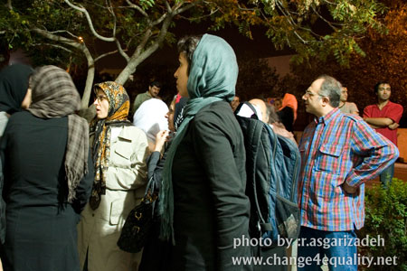
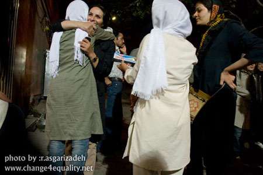
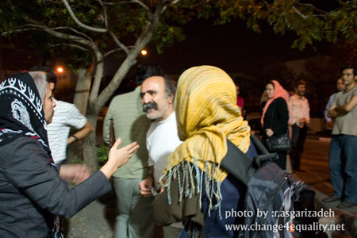

|
|
بازداشت شدگان مراسم 22 خرداد آزاد شدند
جمعه24 خرداد 1387

تغییر برای برابری : بازداشت شدگان سالگرد 22 خرداد، بامداد امروز جمعه به قید ضمانت آزاد شدند.

ناهید میرحاج، آیدا سعادت، نسرین ستوده، ژیلا بنی یعقوب،نفیسه آزاد، سارا لقمانی،جلوه جواهری، فریده غائب و عالیه مطلب زاده فعالان جنبش زنان و روزنامه نگارانی هستند که عصر دیروز مقابل محل برگزاری نشستی به مناسبت 22 خرداد دستگیر شدند.

نه نفر از فعالان حوزه زنان و روزنامه نگاران حوزه زنان که روز گذشته توسط نیروهای امنیتی دستگیر شده بودند، شب گذشته به وزرا انتقال داده شده و در این بازداشتگاه بدون تفهیم اتهام، مورد بازجویی در مورد عقاید و فعالیت هایشان قرار گرفتند.

این در حالی است که مسئولان بازداشتگاه وزرا تا دقائقی قبل از آزادی فعالان زن، از وضعیت این افراد و تحویل آنها به بازداشتگاه وزرا اظهار بی اطلاعی می کردند.
دیروز قرار بود تعدادی از فعالان جنبش زنان در گالری راه ابریشم تهران سالروز 22 خرداد ،روز همبستگی زنان را گرامی بدارند اما آنها هنگام مراجعه به این گالری با درهای بسته و حضور نیروهای انتظامی و امنیتی و ممانعت شان برای برگزاری این نشست مواجه شدند . این در حالی است که پیش از این مدیریت این گالری فرهنگی موافقت خود را با بر گزاری این مراسم اعلام کرده بود اما با فشار نیروهای انتظامی و امنیتی مجبور شد درهای گالری را بر میهمانان و سخنرانان این مراسم ببندد.
بر اساس اطلاعیه شماره دو کمیته هماهنگی برگزار کننده این مراسم مقامات مسوول در تمام دوسال گذشته از دادن مجوز به فعالان جنبش زنان برای برگزاری تجمع مسالمت آمیز خودداری کرده اند و هرگونه تجمع محدود آنها را نیز مورد حمله و ضرب و شتم قرار داده اند و حتی در برخی از موارد مانع برگزاری هرگونه گردهمایی این فعالان در خانه های شخصی شان شده اند.گروه هماهنگی اظهار تاسف کرده است که نیروهای امنیتی از برگزاری یک مراسم آن هم با حضور جمع محدود صد و پنجاه تا دویست نفره و در یک محیط سربسته به وحشت می افتند و از برگزاری آن ممانعت می کنند.
اخبار مرتبط:
اطلاعیه شماره(1) گروه هماهنگ کننده مراسم بزرگداشت 22 خرداد 1387
جلوگیری از برگزاری سمینار حقوق زن در تهران/بی بی سی
آزادی ۹ فعال زن به قید ضمانت/دویچه ووله
ایرادهای حقوقی وکلا به بازداشت خودسرانه مدافعان حقوق زنان در روز همبستگی زنان/روزنامه سرمایه
آزادی 9 نفر از فعالان امور زنان/روزنامه کارگزاران
نامه اعتراض آمیز حزب سبزهای سوئد نسبت به دستگیری فعالین کمپین یک میلیون امضاء
بیانیه کمیته دانشجویی گزارشگران حقوق بشر:فعالان زن بازداشت شده را آزاد کنید
جنبش زنان، تابستان سختی در پیش دارد/شهرزاد نیوز
برخلاف قانون بودن بازداشت هشت فعال زن/محمد مصطفایی
«تعدادی از فعالان جنبش زنان بازداشت شدند»/رادیو فردا
ممانعت از تجمع زنان در بزرگداشت ۲۲ خرداد، راديو زمانه
بازداشت تعدادی از فعالان جنبش زنان/رادیو زمانه
نیروهای امنیتی از برگزاری مراسم بزرگداشت 22 خرداد در یک گالری در نهران جلوگیری کردند /ادوار نیوز
در روز همبستگی زنان صورت گرفت :بازداشت فعالان جنبش زنان در تهران /اخبار روز
بازداشت هشت نفر از فعالان جنبش زنان در سالگرد ۲۲ خرداد/گویا نیوز
بازداشت هشت نفر از فعالان جنبش زنان در سالگرد 22 خرداد/پیک ایران
دستگیری 8 تن از فعالین زن درمراسم 22 خرداد /شهرزاد نیوز
دستگیری گسترده زنان فعال در امور حقوقی و اجتماعی/ به جرم زن بودن